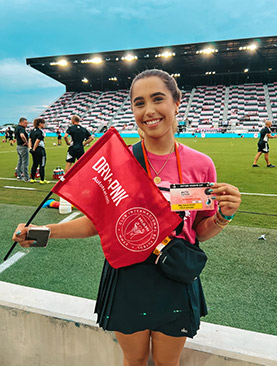
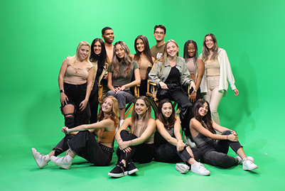

Anchor, Reporter, Executive Producer, and Production Technician
Executive Producer and technician for several successful on-air weekly live shows that included both the production dynamic and technical operation of all control room equipment.
Desk anchor and field reporter for weekly on-air live broadcasts for three UM award winning shows
Pitch, research, and conduct field interviews
AutoNation

Corporate Communications Intern Summers of 2021-2022
Social Media Host: Responsible for daily hosting of corporate Instagram, Twitter, Facebook, and YouTube platforms to increase social media presence; promotion of corporate events, sponsorships and collaborated with all departments on an integrative social media strategy.
Student Government

Board of Communications Executive
Created ads and designed graphics for UM Instagram posts and stories to promote student engagement.
Specialized in videography, filming and editing monthly progress reports to spread awareness of student government initiatives, accomplishments and campus Covid-19 policies.
Maintain and manage all social media accounts within several branches of UM Student Government.
UMTV
Anchor, Reporter, Executive Producer, and Production Technician